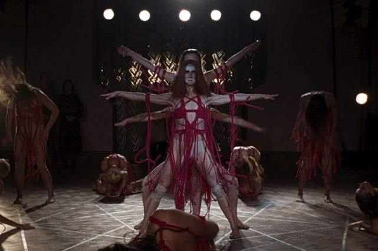

Gelegen im stillen Örtchen Greendale kommen Teufelsanbeterinnen hier auf ihre Kosten. Magische Rituale stehen im Bestattungsinstitut an der Tagesordnung - genießen Sie tödliche Kochkurse bei Hilda Spellman, oder lernen Sie mit Zelda Spellman und ihren Flüchen jedem das Leben zur Hölle zu machen. Die viel Beschäftigte Tochter, Sabrina Spellman, ist kurzzeitig bei uns für Séancen buchbar. Für mehr Informationen Kontaktieren sie uns bitte via Seelenspiegel.
Frühstück und Abendessen Inklusive.
Doppelzimmer: 400,- Eur Pp. pro Nacht
Einzelzimmer: 349,- Eur Pp. pro Nacht
Kinder unter 16 Jahren nicht Erwünscht.
Bitte nur Stubenreine Daemonen mitbringen.
Wollen sie tanzen lernen - mit anderen Frauen und der Dunkelheit? Diese Reise ist besonders für sportliche Kunden geeignet. Durch hypnotischen Tanz wird in der Helena-Markos Akademie die Lebensenergie junger Frauen gesammelt und in Ritualen freigesetzt. Sie werden als andere Person diese Schule verlassen. Vielleicht verlassen Sie sie nie. Wenn das verlockend für sie klingt, buchen sie noch heute!
Doppelzimmer im Schülerflügel: 80,- Eur pP. pro Nacht
Es sind nur Doppelzimmer buchbar.
Frühstück, Mittagessen und Abendessen im Preis enthalten.
Wir sind für mögliche seelische Beeinträchtigungen nicht haftbar.
Besonders das zarte Geschlecht schätzt unsere Backpack-Reisen. Vielleicht ist es eine angenehme Abwechslung für unsere geliebten bärtigen Geschöpfe, mal einen Rucksack mit Zelt und Schlafsack auf dem Rücken zu tragen, anstatt die toxischen Erwartungen der Gesellschaft. Fernab der Zivilisation können sie sich dem einzig wichtigen widmen: Freundschaft. Was belastet ihre zwischenmenschlichen Beziehungen? Gibt es Unausgesprochenes zwischen ihnen? Verdrängen sie Etwas? Als damals ihr Freund bei einem Raubüberfall getötet wurde, hätten Sie es verhinden können, doch Sie hatten zu viel Angst? Haben sie den Schatten bemerkt, der ihnen seit einigen Kilometern folgt und Hufabdrücke im Waldboden hinterlässt? Fehlt nicht eine Person ihrer Gruppe?
2 Wochen Wanderurlaub in Norwegen
499,- Eur pro Person exkl. Flug oder Teleportation
Tipp der Redaktion: versuchen sie nicht umzuknicken. Ihre Fähigkeit zu rennen ist von größter Bedeutung.
Wunderbar. Die Natur ist atemberaubend und die Leute so herzlich. Wenn man sich erst an die Bräuche gewöhnt hat, ist es wirklich toll.
Einige sind etwas früher gegangen. Opferrituale liegen eben nicht jedem. Anderen hat das Kochen dort sehr Spaß gemacht. Meinem Freund haben die Frauen dort ein bisschen zu gut gefallen. Aber wir hatten schon lange Beziehungsprobleme. Die Reise hat geholfen, alles zu verarbeiten.
Er hat mich dort betrogen. Die anderen Mädchen waren sehr unterstützend. Als ich beim Maitanz gewann und zur Maikönigin gekrönt wurde, durfte ich entscheiden, wer im Dorf verbrannt wird. Die entscheidung fiel mir dann leicht. Ich muss sagen, kein anderer Urlaub hätte mich seelisch so befreien können. Es ist einfach etwas magisches daran, deinen betrügerischen Exfreund im Strohfeuer brennen zu sehen.
Absolut. Danke, dass ich immer wieder so tolle Reisen für euch machen kann.